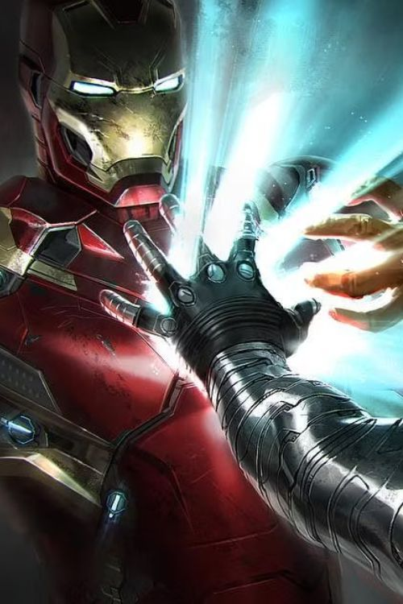
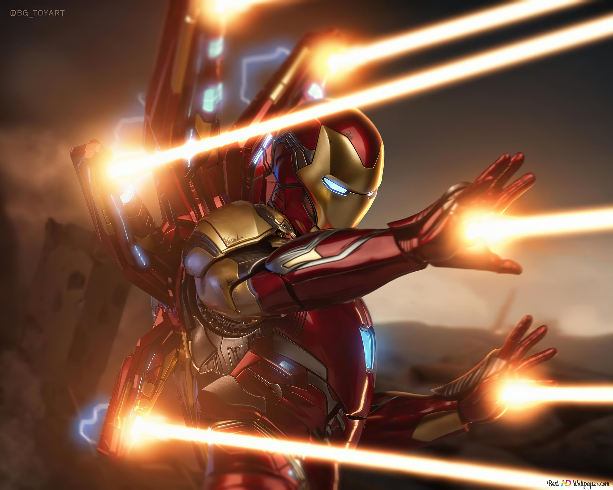
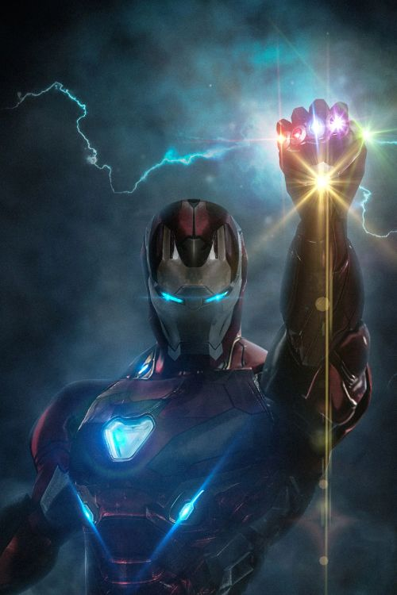

IRON MAN

Debut date: April 14, 2008
Super Power
|  |  |  |
| Omnibeam | Blaster | Gauntlet |
Iron Man is a 2008 American superhero film based on the Marvel Comics character of the same name. Produced by Marvel Studios and distributed by Paramount Pictures,[a] it is the first film in the Marvel Cinematic Universe (MCU). Directed by Jon Favreau from a screenplay by the writing teams of Mark Fergus and Hawk Ostby, and Art Marcum and Matt Holloway, the film stars Robert Downey Jr. as Tony Stark / Iron Man alongside Terrence Howard, Jeff Bridges, Gwyneth Paltrow, Leslie Bibb, and Shaun Toub. In the film, following his escape from captivity by a terrorist group, world-famous industrialist and master engineer Tony Stark builds a mechanized suit of armor and becomes the superhero Iron Man.